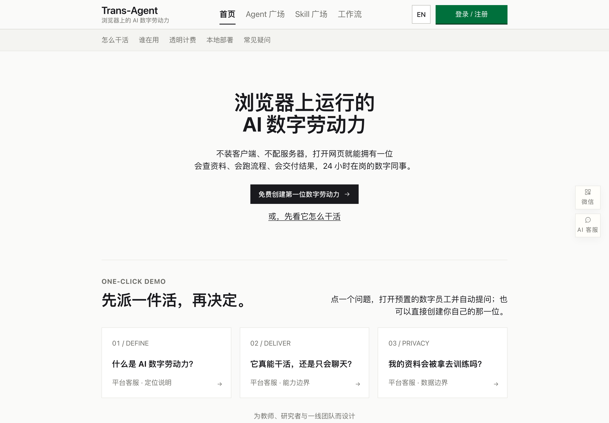
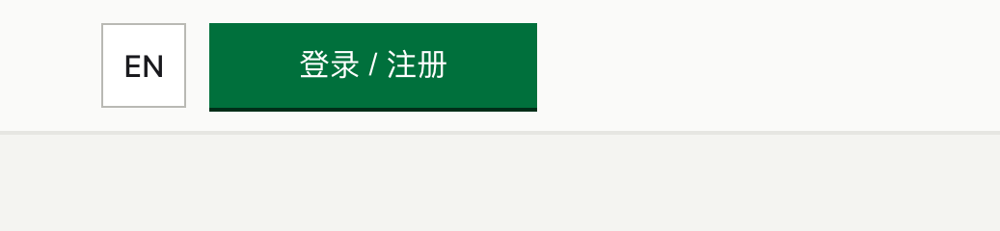
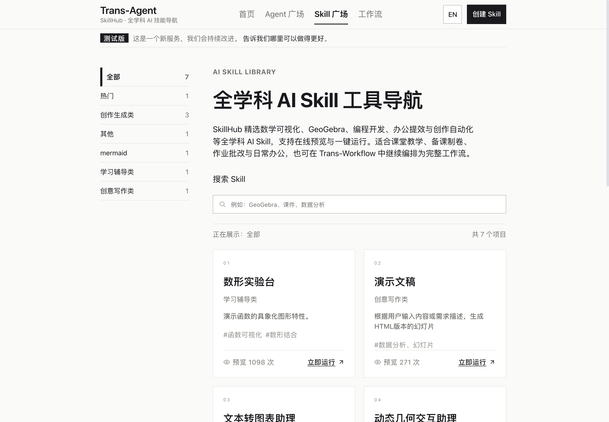
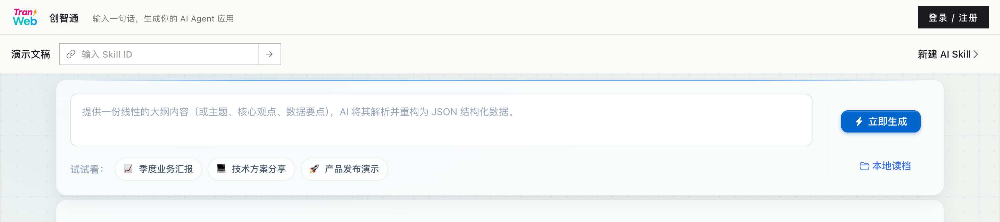

transweb-ai
使用说明书
不用记命令：把任务交给 AI
你只需要会三件事：打开网页、复制 API Key、把需求告诉 AI。安装、配置、调用和排错，全部由 AI 代你完成。
你只需要做三件事
不需要打开终端，不需要输入命令。把“技术动作”交给 AI。
在网页上创建 API Key
登录 transweb.cn，在右上角账号菜单里创建并复制 Key。这是唯一需要你手动点击的步骤。
把 Key 交给 AI，让它配置
对 AI 说：“请帮我配置 transweb-ai 的 API Key。”然后把 Key 粘贴给它；AI 会保存到本机，不会让你敲命令。
直接对 AI 说需求
“请列出我的应用”“请用某个技能处理这份资料”“请做一份 PPT”。AI 会调用技能并交回结果。
全文约定：所有绿色“对 AI 说”框里的文字，都是让你复制/转述给 AI 助手的话，不是终端命令，也不需要你理解技术细节。
目录
最重要的一句话：API Key 只在创建时完整显示一次。复制后立刻保存；不要发到群聊、公开网页或截图里。
AI 会替你做什么
你负责“说清楚要什么”，AI 负责“把技能跑起来”。
transweb-ai 是一个装在 AI 助手里的技能。它让 AI 能够读取你 transweb.cn 账号下的应用，并代你执行任务。
| 你对 AI 说 | AI 会做什么 | 你会得到 |
|---|---|---|
| “帮我配置 transweb-ai 的 Key” | 保存 Key 到本机、检查技能是否完整 | 配置成功/失败说明 |
| “列出我账号里的 AI 应用” | 读取你的应用清单 | 应用名称、类型、ID |
| “用这个应用处理这份资料” | 调用对应 Agent/Skill | 回答文字，或结果链接 |
| “帮我做一份 PPT” | 调用演示文稿应用 | 网页版 PPT 链接 |
| “先演示，不要真的执行” | 离线预览工作流 | 示例结果，不扣积分 |
Agent 与 Skill 的差别
Agent：给你一段回答
像聊天一样提问，AI 返回文字。适合问答、教练、排障、顾问。
Skill：给你一个结果链接
按固定格式处理任务，结果会归档到网页。适合总结、提取、报告、PPT。
它默认能做什么
- 生成网页版 PPT
- 生成可视化图表
- 生成 3D 手办建模
- 生成 3D 动画
- 生成小游戏
安装 transweb-create 后，还可以让 AI 把资料变成新的 Agent、把需求变成新的 Skill，持续扩展你的个人工具集。

开始前准备
你不需要懂 Python，也不需要打开终端。
| 你需要有 | 说明 |
|---|---|
| 一个浏览器 | Chrome、Edge、Safari 均可，能打开 transweb.cn。 |
| 一个 transweb.cn 账号 | 没有就现场注册；登录后才能创建 API Key。 |
| 一个 AI 助手 | 已经安装 transweb-ai 技能的客户端，例如 Claude Code、OpenClaw、DSH 等。 |
| 技能已安装 | 你的 AI 助手能识别“transweb-ai”这个技能；不会安装也没关系，直接让 AI 帮你安装。 |
请帮我安装 transweb-ai 技能。如果已经安装，请检查它是否完整、能否正常使用。
AI 会自行处理安装、目录和依赖；你不需要输入任何命令。
你不需要做的事
- 不需要学习命令行、Python 或配置文件格式；
- 不需要记住应用 ID，AI 会帮你查；
- 不需要手动改 JSON；
- 不需要自己排查网络错误，把报错转给 AI 即可。
创建 API Key（唯一需要点击的步骤）
Key 是你账号的“通行证”。跟着页面点即可。

第 1 步：登录网站
在浏览器打开 https://transweb.cn/，点击右上角 登录 / 注册，按页面提示完成登录或注册。
第 2 步：找到 API Key 管理
登录后，在页面右上角找到你的账号入口（头像、用户名或菜单），展开后找到 API Key，点击 管理。
第 3 步：创建并复制
输入一个名字
例如“我的电脑”或“transweb-ai”，只是帮助区分，不是密码。
点击“添加”
平台会生成 Key。网页创建的 Key 默认带读取应用和调用 AI 的权限。
立刻复制
完整 Key 以 ak_live_ 开头，只在创建时显示一次；关掉就看不到了。
下图是登录后 API Key 面板的脱敏界面示意，仅用于说明按钮和字段位置；真实 Key 不会出现在本文档中。
| 我的电脑 ak_live_•••••••••••• | 2026-11-17 | 复制 删除 |
| 工作电脑 ak_live_•••••••••••• | 2026-11-10 | 复制 删除 |
第 4 步：妥善保存
- 粘贴到密码管理器，或只保存在自己电脑的安全位置；
- 不要发到微信群、公开网页、GitHub、截图；
- 不要手动加空格、换行或引号；
- 如果丢了，重新生成一个即可，旧 Key 会立即失效。
为什么 AI 可能说“缺少 account:read”？
网页创建的 Key 通常没有“读取账号资料”的权限。这不影响列出应用、执行技能和做 PPT；让 AI 跳过“账号信息验证”，直接测试实际功能即可。
让 AI 配置 Key
你只需要把 Key 交给 AI；保存和检查由 AI 完成。
第 1 句：告诉 AI 要配置
请使用 transweb-ai 技能，帮我配置 transweb.cn 的 API Key。
我会把 Key 粘贴给你。请把它保存在本机配置中，不要在回复里显示完整 Key，也不要把 Key 写进任何文件、日志或截图。
第 2 句：粘贴 Key
AI 可能会让你粘贴 Key。复制完整的 ak_live_...，直接粘贴到对话里发送即可。
安全提醒：只在私人的 AI 对话里粘贴 Key；不要在群聊、公开论坛、工单系统或录屏中粘贴。配置完成后，让 AI 不要再重复显示它。
第 3 句：让 AI 验证
请检查 transweb-ai 是否配置成功，并列出我账号里最近的 5 个 AI 应用。
如果提示缺少 account:read，请跳过账号资料验证，直接确认“列出应用”能不能正常工作。
如果 AI 问你“用哪个环境/怎么装”
请按 transweb-ai 技能的默认方式处理，不需要我手动输入命令。遇到需要我确认的步骤，请用一句话告诉我该点哪里或该把什么发给你。
多账号或换一个 Key
请帮我新建一个名为 work 的配置，使用我接下来提供的另一个 API Key；配置好后切换到 work，并保留原来的默认配置。
切换服务地址（一般用户可跳过）
请把 transweb-ai 的服务地址临时切换到我指定的地址，并用一个只读操作验证；验证后恢复原来的地址。
你不需要知道：配置文件在哪里、用了什么命令、Key 怎么加密。AI 会在本机完成，并在回复里只告诉你“成功/失败”和下一步。
让 AI 检查是否可用
不用看懂日志；让 AI 自己自检并汇报。
第 1 句：离线自检
请运行 transweb-ai 的离线自检，确认技能文件、版本、依赖和密钥安全都没有问题，然后用一句话告诉我结果。
第 2 句：真实列一次应用
请列出我账号里最近的 5 个应用，并告诉我每个应用是 Agent、Skill，还是旧版未标注类型。
如果能列出应用，说明 Key 已经生效。
遇到问题时，把这段发给 AI
我在使用 transweb-ai 时遇到下面的提示。请不要只让我自己敲命令：先解释原因，再直接帮我修复；如果需要我操作，请用非技术语言告诉我点哪里。
报错原文：
“把报错粘贴在这里”
| 你看到的现象 | 大概率原因 | 你可以对 AI 说 |
|---|---|---|
| “请先登录账号” | Key 失效、复制不完整或已撤销 | “Key 可能失效了，请带我重新创建并替换，旧 Key 作废。” |
| “缺少 scope” | Key 没有 account:read，通常不影响主要功能 | “请跳过账号资料验证，直接测试列出应用和做 PPT。” |
| “积分不足” | 账号余额低 | “请先做离线演示，不要真实调用；再告诉我需要多少积分。” |
| “找不到结果存档” | 生成结果归档延迟 | “请等待后重试，不要重复生成，避免重复扣费。” |
| “接口不存在” | 服务地址不对 | “请检查服务地址，必要时恢复官方地址后重试。” |
| AI 一直让你自己敲命令 | AI 没有按“代你操作”的方式工作 | “请直接代我执行，不要让我手敲命令；需要确认时用中文问我。” |
让 AI 开始工作
从“找应用”到“做 PPT”，都只需要一句话。
列出应用
请用 transweb-ai 列出我账号里最近使用的 10 个应用，按 Agent、Skill 分类，并告诉我每个应用适合做什么。
执行一个应用
请找一个适合“把会议记录整理成待办”的 Skill，用我下面这段会议记录执行，并把结果链接发给我：
“粘贴会议记录……”
如果应用是 Agent，AI 会直接给你回答文字；如果是 Skill，AI 会给你一个结果链接。
生成 PPT
请用 transweb-ai 帮我做一份 PPT，主题是“TransWeb 入门指南”，面向第一次使用的同事，12 页左右，每页 3—5 个要点，最后给我网页版链接。
先预览，避免花积分
请先用离线演示模式展示你会怎么完成，不要真实调用、不要扣积分；我确认后，再执行真实版本。


安全注意事项
Key 是账号的钥匙，不是普通文本。
一定要做
- 只把 Key 发给私人的 AI 对话；
- 让 AI 保存到本机，不要在回复里显示完整 Key；
- 不同设备/团队用不同 Key；
- 不用时删除或轮换；
- 公开结果前检查是否含敏感信息。
一定不要
- 不要发到微信群、公开网页、GitHub；
- 不要用共享账号做自动化；
- 不要把 Key 写进截图、录屏、PPT；
- 不要把“未公开”当作绝对保密；
- 不要在不明网站粘贴 Key。
怀疑 Key 泄露怎么办
我怀疑 API Key 泄露了。请带我完成：作废旧 Key、创建新 Key、替换本地配置，并检查最近的调用和积分消费。
生成结果可以公开吗？
AI 生成的 PPT/结果链接可能可以被拿到链接的人打开。对外分享前，先让 AI 检查内容里有没有内部数据、个人信息或不该公开的材料。
你不需要自己判断技术风险：把“这个链接能公开吗”“这段内容能发出去吗”直接问 AI，让它先做一次敏感信息检查。
常用对话模板
复制下面任意一段，把括号内容换成你的实际情况。
请帮我安装并检查 transweb-ai 技能。不要让我手动敲命令；需要我确认时，用中文告诉我下一步。
请使用 transweb-ai 技能，帮我配置 transweb.cn API Key。我会把 Key 粘贴给你；请保存在本机，不要在回复中显示完整 Key。
请检查 transweb-ai 是否可用，并列出我账号里最近的 5 个应用。若提示缺少 account:read，请跳过账号资料验证，直接测试实际功能。
请列出我账号里所有 Agent 和 Skill，按类型分组，并告诉我每个应用适合什么任务。
请用 transweb-ai 帮我做一份关于（主题）的 PPT，面向（听众），约（页数）页，每页 3—5 个要点，最后给我网页版链接。
请找一个适合（任务）的 Skill，用我提供的资料执行，并给出结果链接；如果找不到合适应用，请告诉我并建议我怎么创建。
请先离线演示你会怎么做，不要真实调用、不要扣积分；我确认后再执行真实版本。
我遇到这个报错：“（粘贴报错）”。请解释原因并直接帮我修复；不要只给我命令，需要我操作时用非技术语言说明。
请检查这段内容/这个链接是否可以公开分享，指出可能的个人信息、内部数据或敏感信息，并给出脱敏建议。